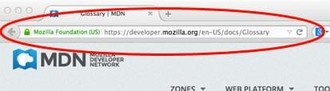

What is the World Wide Web?
The World Wide Web (www) is essentially a collection of data and information that the entire world has put together to be accessed by everyone, so long as they have a computer and an internet connection. All information on the www is connected through hyperlinks, which take the user to where that information is located and is identified by the use of a Uniform Resource Locator (URL). People may upload different types of media to the www, but one of the most common forms is through a web page, which consists of “hypertext documents formatted in Hypertext Markup Language (HTML)” as stated by Wikipedia.

How is all this information stored?
A web server is used to store all the information that is uploaded onto the www. A webserver is essentially one or multiple computers made to store and receive information that users upload to it. The web server sends out this information when it is requested by a user and this allows them to look at websites, documents and images.
How is the World Wide Web different from the Internet?
The bbc.co.uk has made an excellent analogy as to the difference between the www and the internet, being that the internet is a “ road that connects town and cities together. The world wide web contains the things you see on the roads like houses and shops ”. The www is essentially websites and images, while the internet can be an email.
What is an intranet?
An intranet is a private network that simulates the www, however can only be accessed by certain people, usually used within a business. Intranets can be a website that sends information only to people who are also associated with the same organization. This private network can prove as a better resource for companies who want to share information with each other but do not want any of their information to be leaked publicly.
What is an internet protocol?
An internet protocol or IP is, “the method or protocol by which data is sent from one computer to another on the internet.” This IP is a set of rules that determines how data can be sent or received on the internet. HTTP (hypertext transfer protocol) is a common protocol used to send data across the www, which can be in the form of most media files such as images or websites.